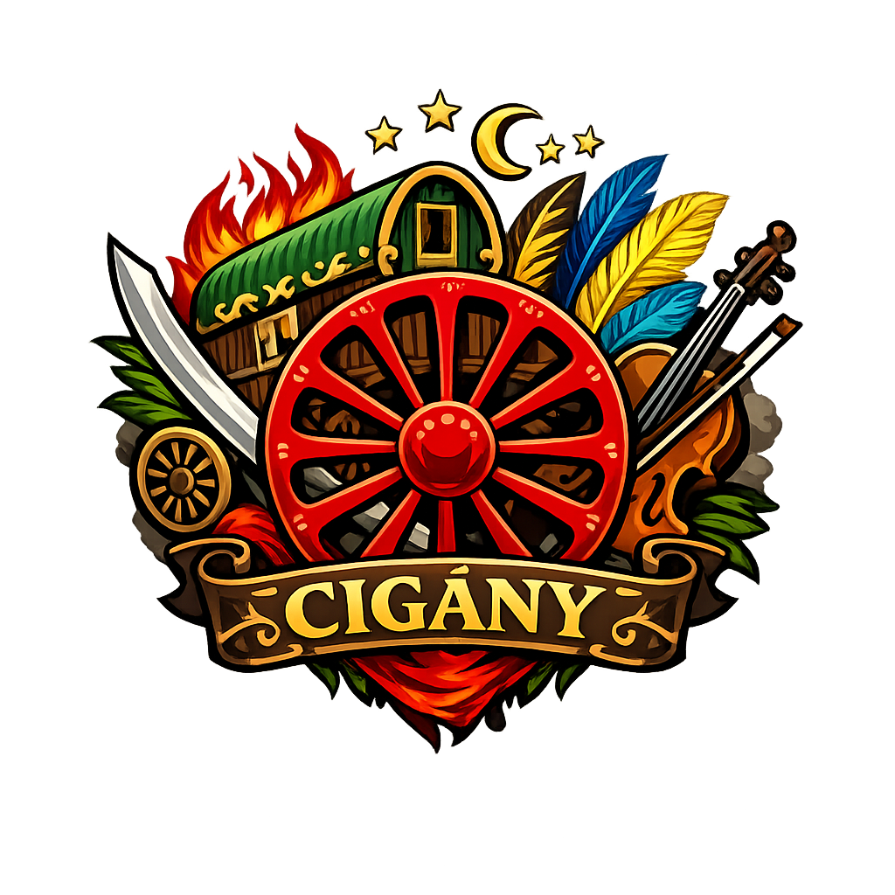

Lost City Önkormányzati Hivatal
Cselekvő Igazságos Közösségért, Összefogásért & Szorgalomért
„Együtt építjük a várost – mindenki számára."
Lost City vezető polgármestere és a CIKÖSZ Önkormányzat megalapítója. Elkötelezett a város fejlődése és polgárainak jóléte iránt.
„A város minden lakója egy nagy família – róluk gondoskodunk."
Lost City alpolgármestere, a CIKÖSZ Önkormányzat egyházi és közigazgatási tanácsosa. A közösség lelki és szervezeti pillére.
„Hit, rend és összefogás – ez a három erősít minket."
A CIKÖSZ Önkormányzat (Cselekvő Igazságos Közösségért, Összefogásért & Szorgalomért) Lost City demokratikusan megválasztott helyi önkormányzati szerve. Célunk a város közigazgatásának átlátható és hatékony működtetése.
Testületünk feladata a lakók számára szükséges szolgáltatások biztosítása, a közbiztonság fenntartása, a városi infrastruktúra fejlesztése és a helyi törvényhozás gyakorlása.
Átláthatóság · Igazságosság · Közösségi összefogás · Fejlődés · Szorgalom
KapcsolatInfrastruktúra-tervezés, építési engedélyek, közterület-felügyelet és a város terjeszkedési projektjei.
Helyi rendeletek alkotása és betartatása, szerződéskötések, határozatok és jogi tanácsadás.
Városi költségvetés kezelése, adóügyek, vállalkozási engedélyek és gazdaságfejlesztési támogatások.
Együttműködés a rendvédelmi szervekkel, közterületi biztonság szavatolása, polgárőr-programok.
Parkok, közterek fenntartása, zöldfelületek kezelése, köztisztasági feladatok koordinálása.
Rászoruló polgárok támogatása, közösségi rendezvények szervezése, civil szervezetek együttműködése.
Szeretnél aktív szerepet vállalni Lost City közigazgatásában? Töltsd ki a jelentkezési űrlapot, és csapatunk hamarosan felveszi veled a kapcsolatot!
* A Google Forms külső oldalon nyílik meg. Cseréld le a linket a valódi formra.